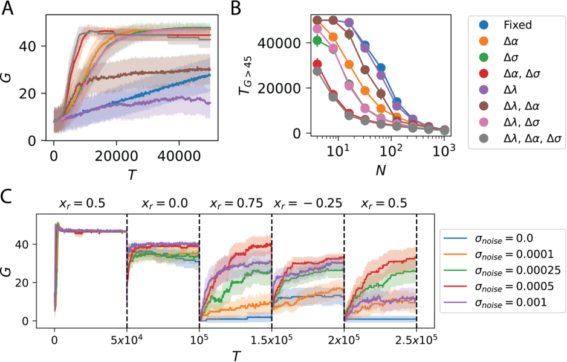
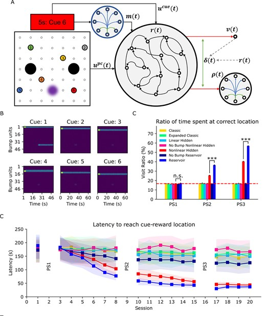

I am a computational neuroscientist studying how biological systems learn models of the world and use them for flexible decision-making under uncertainty. My research pursues three connected goals: (i) characterising the neural computations that underlie learning in the brain through theory-driven modelling, yet grounded in experimental data (ii) evaluating these computational principles using artificial systems to improve their scalability and sample-efficiency (iii) developing mechanistic hypotheses about how disruptions during learning contributes to psychopathology, with the aim of informing targeted interventions. I hope this work ultimately improves the quality of life of people around me.
News
Experience
- 2026 – Present Postdoctoral Fellow · Max Planck Institute for Biological CyberneticsAdvisor: Peter Dayan
- 2023 – 2025 Postdoctoral Fellow · Harvard University SEASAdvisor: Cengiz Pehlevan
- 2022 – 2023 Research Scientist I · CFAR, A*STAR
- 2019 – 2024 Co-Founder & Principal Scientist · Nugen.ai
- 2017 – 2018 Research Engineer · AI Initiative, A*STAR
Education
- Ph.D. 2023 Computational Neuroscience · National University of SingaporeAdvisor: Andrew Tan · Biologically Plausible Computations Underlying One-Shot Learning of Paired Associations
- B.Sc. 2017 Life Sciences (Hons. Distinction) · National University of SingaporeDouble Minor: University Scholars Programme & Special Programme in Science
Honors & Awards
- Young NUS Fellow, NUS Development Grant 2025 (SGD 20,000)
- Postdoctoral Fellowship in Computer Science, Harvard University (2023)
- MIT CBMM–Fujitsu Laboratories Fellow (2019)
- NUS Graduate School Scholarship (2018)
- NUSS Gold Medal for Outstanding Achievement (2017)
- A*STAR Undergraduate Scholarship (2013)
Selected Publications


In Preparation
Journal Articles
Conference Proceedings
Book Chapters
Workshop Proceedings
Research is only part of who I am. Here is a glimpse into the other things I care about.
Military Service
🎖️ Singapore Armed Forces
Service: February 2011 – Present · Current Appointment: S3 Operations Officer
National Service is a cornerstone of Singaporean identity. Over more than a decade of reservist service, I served as a Combat Engineer Platoon and Company Commander — roles requiring clear decision-making under uncertainty and leading teams under pressure. Skills that turn out to be surprisingly useful in research too.
Entrepreneurship
Applying research to real-world problems to create impactful solutions.
🔬 Noova Tech 2026 – Present
Consultant. Advising on AI strategy and product development at the intersection of neuroscience and technology.
🚀 Nugen.ai 2019 – 2024
Co-Founder and Principal Scientist. Built AI-driven tools for personalized learning and adaptive assessment, translating neuroscience principles of learning and memory into practical educational products.
📋 Agile Practitioner
Certified Scrum Product Owner (CSPO) · Certified Scrum Master (CSM)
I enjoy sitting with people, understanding their problem statements, and figuring out what actually needs to be built.
Community
Interesting things happen when the community is empowered to innovate and lead.
🌺 NUS Tamil Language Society
Advisory Panel / Ex-President · August 2014 – Present
Mentoring student leaders and preserving Tamil language and culture on campus. I have produced, directed, and acted in student theatre productions — a creative outlet that keeps me honest about storytelling and communication.
🤖 Tamil + AI
Collaborating with AI Singapore to create educational videos for the AI for Everyone initiative in Tamil. making AI literacy accessible to Tamil-speaking communities. I served as Chairman of the Tamil+AI Conference 2019 — bringing together technologists and language community members to explore the intersection of AI and Tamil culture.
In August 2026 I delivered the keynote at the Seminar for Tamil Language Teachers (தமிழாசிரியர்களுக்குரிய கருத்தரங்கம்), Ministry of Education, Singapore, on the integration of AI in teaching and learning.
📚 Tamil Open Data Repository — Tamil makes up just 0.05% of the web data that AI systems learn from, against 40.6% for English. I am piloting an open repository for Tamil teachers to contribute high-quality, anonymised teaching material so that future AI can learn Tamil properly.
Contribute to the repository →
Travel & Adventure
I love exploring the world! Preferably with the least amount of walking.
Private Pilot (PPL)
I am a FAA-certified Private Pilot. Navigating landmarks at 5,000 ft requires 3D place fields.
Motorcycle
It forces you to be present and situationally aware, or end up in the mud like I have.
Road Trips
When two wheels aren't enough, four will do. Long drives are good for thinking through hard problems, or zoning out and letting my system one take over.
CrossFit
My wife convinced me it was fun and useful so that I can run after my son. I believe she is right.
Tamil Open Data Repository
A pilot collection of high-quality, teacher-created Tamil teaching material — built so that future AI systems can actually learn Tamil properly. Every contribution is credited, anonymised, and openly licensed.
Why this matters
First — what is a "token"?
Counting tokens: tokens are occurrences, not distinct words
The same word in Tamil costs about twelve times more
- Type an English sentence. Watch the token count sit close to the word count.
- Now type the same sentence in Tamil. The count jumps several times higher.
- Try a single word —
teacher, thenஆசிரியர். Same meaning, wildly different cost. - Click "Show token IDs" to see the fragments. For Tamil, many will be meaningless slivers rather than letters.
- Switch the tokenizer between GPT-4o and GPT-3.5 & GPT-4 using the selector, and watch the Tamil count drop by roughly two-thirds. Nothing about the Tamil changed — only the dictionary did. That is the whole argument for this repository in one click.
There is a sting in this. Token counts flatter Tamil. The same idea written in Tamil produces more tokens than in English while carrying no more meaning — identical content, chopped finer. Measured in tokens, Tamil looks less far behind than it is. Measured in ideas, the gap is worse than it appears.
The consequence teachers feel without knowing why: at the same context limit, a Tamil user fits about 15% of what an English user fits. Paste a long composition into a chatbot in Tamil and it runs out of memory roughly six times sooner.
Large language models are trained largely on Common Crawl, an open snapshot of the public web. The July 2026 crawl contains about 2.14 billion web pages. Here is how the languages divide it up.
| Language | Share of pages | Est. pages | Est. tokens |
|---|
Percentage figures are Common Crawl's own published statistics for crawl CC-MAIN-2026-30 (July 2026), which identifies the primary language of each page. Page and token counts are estimates derived from the 2.14 billion page total, assuming roughly 1,000 tokens of extracted text per page. Source: Common Crawl language statistics.
The goal: get Tamil to 1%
Around 80 million people speak Tamil, and it is one of the world's oldest living classical languages. Yet it makes up 0.0488% of Common Crawl — while English makes up 40.6%. English has roughly 830 times more presence on the web that AI systems learn from.
To reach 1% of Common Crawl, Tamil needs roughly 20 million more pages of text — about 20 billion additional tokens.
What this repository has collected so far
Token counts are estimates: approximately 1,200 tokens per page of digital text and 600 tokens per page of handwritten or scanned material. They are indicative of scale, not exact measurements.
What we are looking for
The teacher's markings are the point
A clean, unmarked worksheet teaches an AI model very little. What is genuinely rare — and what no web scraper can ever collect — is your judgement made visible: the error identified, the correction supplied, and the reasoning behind it. Please contribute material that carries your input, whether as red ink, margin comments, tracked changes, rubric scores or annotations.
📄 Digital files
- Word documents, PDFs, PowerPoint, plain text, spreadsheets
- Worksheets and comprehension passages with model answers
- Exam or assessment questions paired with correct answers and marking schemes
- Student compositions with tracked changes or inserted comments
- Lesson plans, grammar explanations, vocabulary lists, rubrics
- Anything reflecting Singapore Tamil usage, register, or local context
📷 Handwritten and scanned material
- Photographs or scans of marked student work — red ink corrections are ideal
- Compositions with your annotations in the margins
- Marked answer scripts showing what was wrong and what the correct answer is
- Handwritten model answers and worked examples
- Whiteboard or blackboard explanations you have photographed
Especially valuable
- Question → student answer → teacher's correct answer triples. This is the single most useful format for training and evaluating AI.
- Composition drafts showing the before and after of your feedback.
- Anything involving spoken or colloquial Singapore Tamil, which current AI handles poorly.
- Classical and literary Tamil with commentary — where AI is least reliable today.
Student privacy is mandatory
Remove every student name before you upload
A redaction tool is built into the uploader below. For photographs and scans, you can drag black boxes over any name directly in your browser. The redaction is permanently burned into the image, and the original file never leaves your computer — only the redacted version is uploaded. Camera and location metadata are stripped automatically in the process.
Where a name is part of the pedagogical content — a composition about a person, for instance — replace it with a generic name such as மாறன் or கமலா rather than deleting it, so the sentence still reads naturally.
Teacher access
Sign in or register
Access is limited to Tamil language teachers and educators. Enter your details and we will email you a secure sign-in link — clicking it verifies your address. There is no password to remember.
We store your name, email, role and institution solely to verify contributors and to credit contributions. Your email address is never published.
Questions
Who can see what I upload?
During the pilot, only the project maintainer. Nothing is published automatically. Before any material is released or shared with a partner organisation, contributors will be told what is being released and given the opportunity to withdraw their material.
Will I be credited?
Yes. Your name and institution are recorded with every contribution, and any published dataset will carry a contributor list. If you would prefer to contribute anonymously, say so in the notes field and we will honour it.
Can I withdraw material later?
Yes. Email m.ganeshkumar138@gmail.com and it will be removed. Once a dataset has been publicly released, prior copies cannot be recalled — which is why nothing is released without notifying contributors first.
What licence will the data carry?
The intention is an open licence permitting research and AI development with attribution required — most likely CC BY 4.0. This will be settled in consultation with contributors and any institutional partner before release, not decided unilaterally.
Is this an official MOE project?
No. This is an independent pilot run by Dr M Ganesh Kumar to demonstrate feasibility. If it succeeds, the case for a properly resourced national repository becomes much easier to make.
I have material but I am not a teacher — writers, publishers, historians?
Please get in touch directly. High-quality Tamil prose of any kind is valuable; this pilot is simply scoped to teachers first because classroom material with corrections is the rarest and most useful kind.